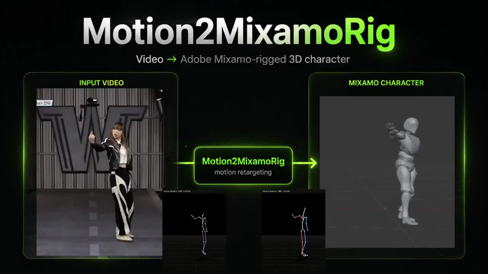
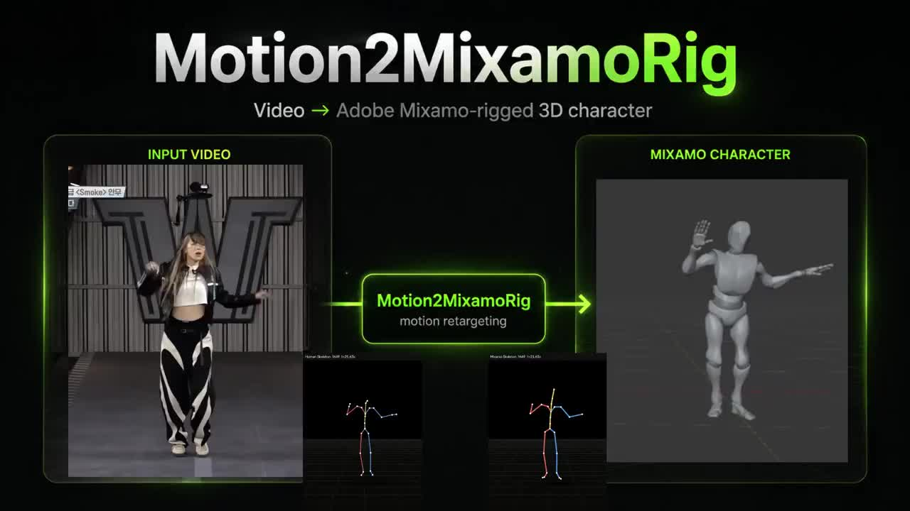
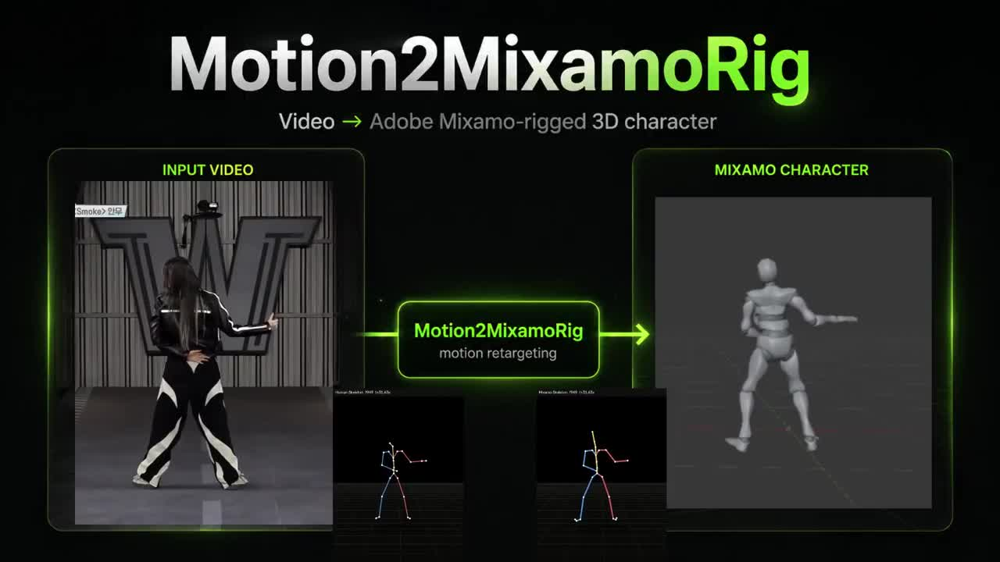

导读：原帖为中文，以下全文照录（含作者一楼补充），仅补小标题与链接。AYi 推荐的是开发者 MaxLiu（@MaxLiu09）开源的 Motion2MixamoRig：把单人视频或单张全身照里的动作迁移到 Adobe Mixamo 绑骨角色上，输出可直接导入 Blender / Unity 的 glb。仓库自述仍标注为实验性（v0.1.0 命令行管线 + Blender 4.2+ 扩展）；“平替爆火付费工具”是推文作者的说法。
主帖
卧槽，做 3D 动画和游戏开发的兄弟们速存，
国外那个爆火但卖的很贵的视频转 3D 动捕工具，
被这个开发老哥直接开源平替了，一段真人视频，一键生成绑好骨骼的 Mixamo 角色，
老哥刚开源的这个 Motion2MixamoRig，支持把任何一段真人动作视频或者单张全身照片，一键提取出高精度的 3D 骨骼骨骼动画，并直接重定向绑定到 Adobe Mixamo 的 3D 角色上。

以前想把一段真实视频里的动作做成 3D 角色动画，要么花大价钱买专业动捕设备，要么一帧一帧人肉修穿模和动捕噪点。
这个开源工具把整个链路全部做通了，输出不仅有四宫格对比视频，还会直接生成带蒙皮骨骼的 glb 资产，拖进 Blender 或 Unity 就能直接在项目里用。
核心能力和玩法非常干净：
- 单人视频或单张照片，直接提取人体 3D 动作与姿态
- 自动重定向到 Mixamo 骨骼体系，无缝适配海量现成 3D 角色
- 直接输出 glb 格式模型与工程动画，支持原生导入 Blender 4.2+ 与 Unity
- 提取出的骨骼数据可直接缓存复用，换不同角色重定向只要几十秒
最爽的是作者还顺手封装了一个 Blender 4.2+ 的原生扩展插件，美术和动效可以直接在 Blender 视图里一键跑通，不用在终端里折腾环境。

本质上，AI 对 3D 和游戏行业的重塑，就是把过去只有工业级动捕棚才能交付的动作资产，彻底打成每个人点几下就能批量生成的白菜价。
开源仓库地址、安装依赖指南和避坑指北放一楼了，做 3D 游戏和动效的建议先备上一份。
一楼：项目信息与避坑
- 项目全称：Motion2MixamoRig
- 开源协议：Apache-2.0
- 开源地址：github.com/MaxLiu22/Motion2MixamoRig
核心工作链路
- 动捕提取：基于 SMPL-X / GVHMR 深度模型，从单人全身视频或单张照片中提取高保真 3D 骨骼轨迹
- 自动重定向：无缝映射至 Adobe Mixamo 标准骨骼体系（如 Y_Bot 等角色），省去繁琐重拓扑
- 工业级交付：自动生成包含 run.json、四宫格对比视频与可直接导入 Blender / Unity 的 mixamo_character.glb
- Blender 扩展：仓库自带 Blender 4.2+ 专用插件，支持在三维视口内直连 Python 环境运行
核心避坑点
- 视频素材必须保证单人且全程头脚入画无遮挡，多人画面会触发安全中断
- 首次运行会自动拉取约 5GB 模型权重，建议在稳定的网络环境下进行初始化
- 骨骼可利用
--skeleton参数无限次复用，换不同模型绑定仅需数十秒

补充：仓库 README 要点（镜像者整理）
- 需 Python 3.10+；安装时
chumpy==0.70要用--no-build-isolation先装，否则报 “No module named 'pip'”。 - SMPL-X 模型、Mixamo 角色 FBX 需自行下载放入
assets/（仓库不附带，受各自许可约束）。 - 建议装 ffmpeg，否则输出视频无声且浏览器不可播放。